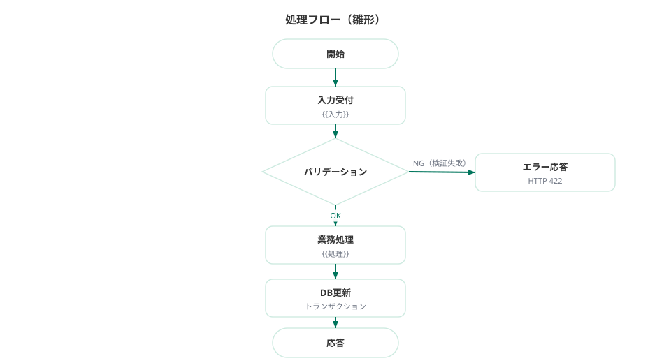
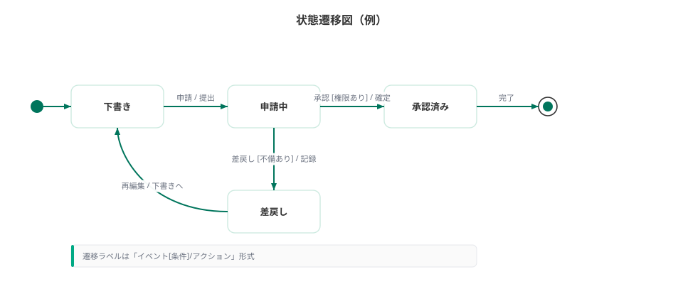

処理設計
撮るほどの主要処理（認証・撮影〜AI解説・記録・地図・設定）のフロー・シーケンス・状態機械を定義する。実装の正は src/ のコードとテストである。
確定メモ
対象は MVP の複雑・致命的処理に限定する。単純 CRUD は基本設計の外部仕様と単体テスト観点を根拠に実装する。
AI は Claude Vision の 1 リクエストで OCR＋解説 JSON を返す。状態機械は idle → capturing → ocr → generating → done | failed | partial。
写真は Vercel Blob、旅の記録は Turso records、設定は user_settings。
方針
- 外部仕様（基本設計）と受け入れ基準を根拠に実装し、生成されたコードとテストを詳細設計の正とする。
- 本書は状態遷移・AI 分岐・所有境界・永続化整合が必要な処理のみ事前設計する。
- ミューテーションは Server Actions / Route Handlers。認証は Better Auth セッション必須。
- 所有境界: すべての
records/user_settings操作はuserId = session.user.idでスコープする。
事前設計の対象
| 処理 | 選定理由 | 節 |
|---|---|---|
| ログイン〜ホーム表示 | 認証境界・未ログイン誘導 | P-01 |
| 撮影 → OCR＋AI 解説 | 外部 AI・状態遷移・failed/partial | P-02 / P-03 |
| 記録に残す | Blob＋Turso 整合・履歴反映 | P-04 |
| メモ更新 | 所有境界 | P-05 |
| 地図ピン表示 | 位置 null 分岐 | P-06 |
| 設定変更・データ全削除 | 破壊的操作・cascade | P-07 |
| スキャン状態機械 | 状態遷移 | P-08 |
| 結果画面 mode / furigana | ローカル状態・設定初期値 | P-09 |
P-01 ログイン〜ホーム表示
処理概要
未認証ユーザーをログインへ誘導し、Google OAuth 完了後にホーム（S-01）を表示する。ホームでは「かざして解説」CTA と、当該ユーザーのさいきんの記録（最大数件、createdAt 降順）を返す。
シーケンス

クリックで拡大
- 利用者: 保護ルート（
/等）へアクセス。 - Middleware / Server Component: セッションを確認。未認証なら
/loginへリダイレクト。 - 利用者: Google ログインボタン → Better Auth
/api/auth/*→ Google OAuth → コールバック。 - Better Auth:
users/accounts/sessionsを upsert・作成。セッション Cookie を発行。 - ホーム RSC:
requireUserId()→recordsをuserIdで絞りcreatedAt DESCで数件取得 → UI 描画。 user_settingsが未作成なら既定値で暗黙作成してもよい（遅延作成可）。
分岐
| 条件 | 結果 |
|---|---|
| セッションなし | /login へ |
| セッションあり・記録 0 件 | ホーム CTA のみ（さいきんの記録は空） |
| セッションあり・記録あり | CTA ＋ 履歴カード 2〜3 件 |
| OAuth 失敗 | ログイン画面にエラーメッセージ（責めない文言） |
P-02 撮影 → OCR＋AI 解説 → 結果画面
処理概要
撮影（カメラまたはギャラリー）で画像を取得し、必要に応じて Vercel Blob または一時領域へ置き、Claude Vision に 1 リクエスト送信する。返却 JSON をパースし、結果画面（done / partial）または失敗画面（failed）へ遷移する。
処理フロー

クリックで拡大
- capturing: シャッター／ギャラリー選択で画像 Blob を取得。
- クライアント: 画像サイズ・形式を検証（JPEG/PNG/WebP 等。過大ならリサイズ）。
- （任意）位置情報:
settings.geoEnabledが true のとき Geolocation を試行。拒否・失敗時はlat/lng/placeName = null。 - 画像をサーバーへ送信（multipart または Blob アップロード後に URL を渡す）。
- ocr → generating（UI 上は 2 段階ローディング）: サーバーが Claude Vision を呼び出し、OCR 原文・タイトル・やさしい／くわしい・ルビ HTML・aiNote・failed/partial を含む JSON を取得。
- JSON パース・スキーマ検証（P-03 参照）。
- 分岐:
failed: true→ 失敗画面（1h）。写真は結果として残さないか、一時のみ破棄。partial: true→ 結果画面（1i）注意バナー＋読めた文字チップ。- それ以外 → 通常結果画面（1e/1f/1g）。
- 結果はまず未保存の一時結果（セッションメモリ / 一時 ID）として保持し、「記録に残す」で永続化する（P-04）。実装都合で先に Blob へ上げてもよいが、failed 時はゴミ Blob を削除する。
シーケンス（外部サービス横断）
- Client → Server Action / Route Handler: 画像＋（任意）geo メタ。
- Server: セッション検証（未認証は拒否）。
- Server → Vercel Blob: 写真 put（または Claude 呼び出し後に成功時のみ put）。
- Server → Claude API: vision メッセージ（画像＋システム／ユーザープロンプト）。
- Claude → Server: JSON テキスト。
- Server: パース・正規化 → Client へ
ActionResult<ScanResult>。 - Client: 状態機械を終端（done | failed | partial）へ更新し画面遷移。
例外
| ID | 発生条件 | 応答 | 対応 |
|---|---|---|---|
| EX-SCAN-01 | 未認証 | UNAUTHORIZED | ログイン誘導 |
| EX-SCAN-02 | 画像なし・不正 MIME | VALIDATION | 再撮影を促す |
| EX-SCAN-03 | Claude タイムアウト／5xx | AI_UNAVAILABLE | 責めないエラー＋再試行 |
| EX-SCAN-04 | JSON パース失敗・必須欠落 | AI_INVALID | failed 相当 UI または再試行 |
| EX-SCAN-05 | Blob アップロード失敗 | STORAGE_ERROR | 再試行。記録は作成しない |
| EX-SCAN-06 | 利用者がキャンセル | — | idle に戻す。進行中リクエストは破棄扱い |
P-03 failed / partial 分岐
AI レスポンス契約に従い、クライアント／サーバー双方で正規化する。
| 条件 | 正規化 | 画面 |
|---|---|---|
failed === true | partial は強制 false。partialChars は null。解説フィールドは空可 | 読み取り失敗（1h） |
partial === true かつ failed でない | 解説は読めた範囲で埋める。partialChars 推奨 | 結果＋注意バナー（1i） |
| 両方 false | 必須フィールド揃いを検証 | 通常結果 |
| 両方 true（不正） | アプリ層で failed 優先に正規化（partial を落とす） | 失敗画面 |
- failed: 「うまく読み取れませんでした」＋コツカード＋「もう一度撮る」／「ホームにもどる」。
- partial: バナー「一部だけ読み取れました…」＋読めた文字チップ。ボタンは「もう一度撮る」＋「このまま記録に残す」。
- 永続化時の
records.partialは partial 成功経路のみ true。failed はレコードを作らない（再撮影前提）。
P-04 「記録に残す」→ records INSERT ＋ 履歴反映
処理概要
結果画面の「記録に残す」で、一時結果を records に INSERT し、履歴・ホーム・地図に反映する。
- セッション必須。
userIdを付与。 - 写真 URL が未確定なら Vercel Blob へ put し
photoUrlを得る。 recordsへ INSERT（title, easyText, detailText, easyRuby, detailRuby, aiNote, ocrRaw, partial, partialChars, lat, lng, placeName, memo, createdAt）。- 成功後: 結果画面を「記録済み」表示。
revalidatePathで/・/history・/map・/result/:idを更新。 - 履歴一覧は
createdAt DESCで当該ユーザーのみ。
分岐
- 二重タップ: 冪等または「既に記録済み」ガード（同一一時 ID の再 INSERT 防止）。
- partial からの保存:
partial=trueのまま保存可。 - 位置情報なし: lat/lng/placeName は null のまま保存。履歴メタは日時のみ。
P-05 メモ更新
updateRecordMemoAction({ id, memo })（名称は実装に合わせる）。requireUserId()後、WHERE id = ? AND userId = ?で UPDATE。- 0 件更新 → 「記録が見つかりません」（他ユーザー ID 推測を防ぐ）。
- 空文字は null 正規化可。履歴カードの「メモあり」バッジは memo 非空で表示。
- 保存済みレコードのみ対象。未保存の一時結果メモはクライアント状態で保持し、INSERT 時に同梱する。
P-06 地図: lat/lng ありのみピン
- 地図画面: ログインユーザーの records を取得。
- ピン対象:
lat IS NOT NULL AND lng IS NOT NULLのみ。どちらか欠ける行は地図に出さない（履歴一覧には出る）。 - ピンタップ → ポップアップ（サムネ・タイトル・メタ）→ 結果画面へ。
- ピン 0 件:
- 記録自体 0 → 空状態（撮影誘導）。
- 記録はあるが座標なし → 「位置情報がオフでも、記録は残せます」系メッセージ＋設定への導線。
- MapLibre GL JS で描画。タイルスタイルは生成り寄りの淡色を推奨。
P-07 設定変更・データ全削除
設定変更
- 対象:
furiganaDefault（boolean）、modeDefault（"easy" | "detail"）、geoEnabled（boolean）。 user_settingsを userId で upsert。既定: furiganaDefault=true, modeDefault="easy", geoEnabled=true。- 変更は以降の結果画面の初期値に効く。既に開いている結果のローカル状態は即時強制しない（任意で同期可）。
データ全削除
- 確認 UI（破壊的操作の再確認）必須。
- 当該
userIdのrecordsを全削除。 - 対応する Vercel Blob 写真を可能な範囲で削除（失敗しても DB 削除は完了させ、孤児 Blob は運用で掃除）。
user_settingsは既定値へリセット、または行削除後に再作成。- Better Auth の users/sessions はアカウント削除フローでない限り残す（MVP の「データ削除」は旅の記録データの削除）。
- 完了後 revalidate。履歴・地図は空状態。
P-08 スキャン状態機械

クリックで拡大
| 状態 | UI | 遷移イベント | 次状態 |
|---|---|---|---|
idle | 撮影画面待機 | シャッター／ギャラリー | capturing |
capturing | 画像取得中 | 画像確定 | ocr |
capturing | — | キャンセル／閉じる | idle |
ocr | 「読み取っています…」 | OCR 相当完了（同一 API 内でも UI 段階 1） | generating |
ocr | — | キャンセル／API 失敗 | idle または failed |
generating | 「解説を作っています…」 | JSON 成功・通常 | done |
generating | — | JSON 成功・partial | partial |
generating | — | failed または解析不能 | failed |
done | 結果画面 | 再撮影 | idle（capturing 経由可） |
partial | 結果＋バナー | 再撮影／記録に残す | idle / 保存後は結果維持 |
failed | 失敗画面 | もう一度撮る | idle |
failed | — | ホームにもどる | （画面遷移、scan は idle） |
禁止遷移: idle → generating（画像なしで AI しない）、done → ocr（再撮影は idle/capturing から）、failed → done（再生成せず再撮影）。
Claude は 1 リクエストのため、サーバー内部は単一 await でもよい。クライアント UI だけ ocr → generating の 2 段階表示とする（API 応答前に段階 1 完了演出、応答後に段階 2 完了でも可）。
P-09 結果画面の mode / furigana ローカル状態
mode:"easy" | "detail"。初期値はuser_settings.modeDefault（取得失敗時"easy"）。furigana:on | off（boolean）。初期値はuser_settings.furiganaDefault（取得失敗時 true）。- 表示テキスト:
- mode=easy かつ furigana on →
easyRuby（なければ easyText） - mode=easy かつ furigana off →
easyText - mode=detail かつ furigana on →
detailRuby - mode=detail かつ furigana off →
detailText
- mode=easy かつ furigana on →
- 切替は即時（〜200ms fade）。ふりがな OFF は
rt非表示でも、プレーン文字列差し替えでもよい。 - ローカル状態は永続化しない。設定変更は次回マウント時の初期値に反映。
- AI 補足（aiNote）はモード非依存で常時表示。免責注記も常時。
Claude プロンプト方針
前提
- 被写体は石碑・案内板・史跡の説明板を想定する。汎用ドキュメント OCR ではない。
- 出力は厳密な JSON のみ（前後の説明文・Markdown フェンス禁止を指示）。
- 日本語。子どもにも伝わる語彙を「やさしい」側で優先する。
出力スキーマ
{
"failed": false,
"partial": false,
"partialChars": null,
"ocrRaw": "碑文・案内の読み取り原文",
"title": "短い題名（十数文字目安）",
"easyText": "やさしい言いかえ（プレーン）",
"detailText": "くわしい説明（プレーン）",
"easyRuby": "やさしい＋<ruby>単語<rt>よみ</rt></ruby> の HTML",
"detailRuby": "くわしい＋ruby HTML",
"aiNote": "背景知識のおぎない（AI 補足）"
}やさしい／くわしい
- やさしい（easy）: 小学校中学年〜でも追える語彙。漢文調・難語は言い換える。子どもに読み聞かせできる長さ。
- くわしい（detail）: 原文の情報量に沿った説明。歴史的背景・用語を残しつつ現代語で通す。
- 両者は同一の事実を共有し、矛盾させない。
ruby HTML
- 形式:
<ruby>漢字<rt>かんじ</rt></ruby>。単語・熟語単位（1 文字ずつ過剰分割しない）。 - 許可タグは ruby / rt 程度に限定。script・イベント属性・外部 URL は出力させない。
- サーバー側でサニタイズ（許可タグ以外除去）してから保存・返却する。
failed / partial 判定指示
- failed: true: 文字がほぼ読めない、石碑・案内板でない、白紙・真っ暗、など解説不能。他フィールドは空または省略可。
- partial: true: 一部のみ読めた。読めた範囲で解説し、
partialCharsに読めた文字列（チップ用）を入れる。failed と同時 true にしない。 - 判読に自信がある通常時は両方 false。必須の title / easyText / detailText / easyRuby / detailRuby / aiNote / ocrRaw を埋める。
その他
- 不確かな歴史事実は断定を避け、aiNote で補足する。
- 利用者の個人情報や看板以外の通行人の特定につながる記述はしない。
- 免責は UI 常時表示のため、JSON に免責文を必須としない。
例外処理一覧（横断）
| ID | 発生条件 | 応答 | 対応 |
|---|---|---|---|
| EX-01 | 未認証で Server Action | UNAUTHORIZED | ログイン誘導 |
| EX-02 | 他ユーザーの record 操作 | NOT_FOUND 相当 | 存在秘匿メッセージ |
| EX-03 | AI 障害 | AI_UNAVAILABLE | 再試行・失敗 UI |
| EX-04 | Blob 障害 | STORAGE_ERROR | 記録中止・再試行 |
| EX-05 | DB 障害 | INTERNAL | 汎用エラー。部分成功の orphan に注意 |
| EX-06 | 全削除の未確認実行 | VALIDATION | 確認トークン必須 |